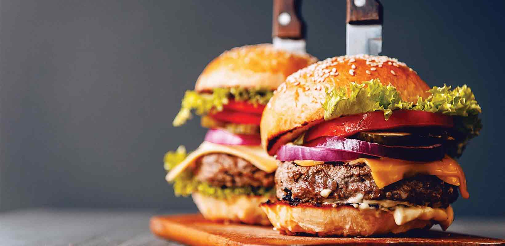

Najjbolji
Najjbolji
burgeri
u gradu,
samo
kod
brata!

Imamo veliki asortiman hrane koju vam spremaju naši profesionalni kuvari. Uživaćete u našoj hrani koja podleže vrhunskom kvalitetu i dobro je ocenjena na svim sajmovima i konkursima.
Vidi meni
Pored uobičajenih pića možete probati naša kraft piva i ceđene sokove, čajeve i koktele. Veći deo menija pića je proizvod naših ruku, svi sastojci se dobijaju sa naših plantaža i farmi.
Vidi meni
Ne bi jedan ovakav lokal postojao da(ga gazda nije otvorio) nema u svojoj ponudi neki specijalitet kuće. Nudimo nasu kuhinju, italijansku, kao i nase popularne burgere. Probajte!
Vidi meni
Šef kuhinje
Zamenik šefa kuhinje
Kuvar

Pomoćni kuvar

Konobar
Konobar
Lokal je fin, usluga brza, osoblje fino. Hrana je naravno ukusna, ćevape bih do sutra jeo! Preporučujem svima da dođu da probaju!
Lep ambijent, mesto da izvedete nekoga! Hrana je divna i ukusna, ima domaćih pića sve od piva do koktela i cedjenih sokova.
Nas šestoro smo jeli roštilj, i mogu Vam reći da nije bilo lako. Lepo smo se najeli i uzivali u picu. Sve pohvale za lokal i osoblje!
Izašla sam s momkom ovde, preporučio je mesto za večeru. Bila sam skeptična jer ne znam lokal, ali zato od sad znam gde ćemo!